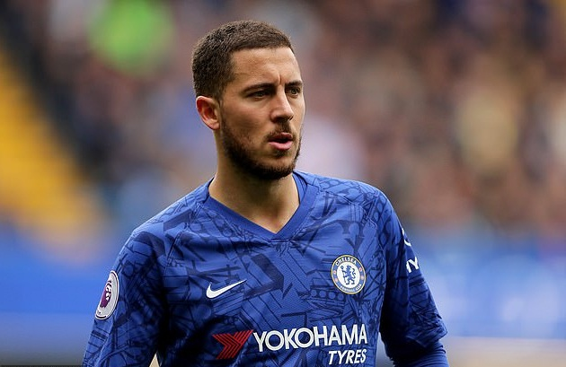
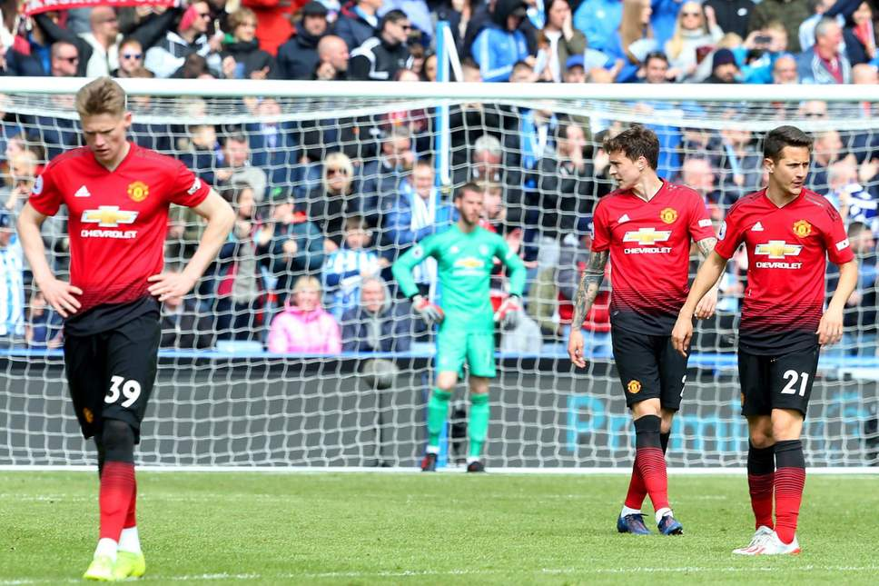
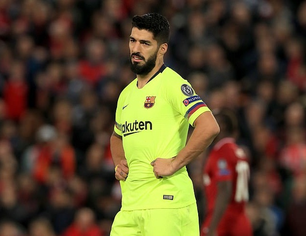

Chuyển nhượng 09/05: M.U chốt giá Coutinho, 1 cái tên ra đi; Arsenal thải loại 10 cầu thủ cùng lúc
Dịch Phong
Những thông tin mới nhất ở các CLB hàng đầu MU, Man City, Chelsea, Arsenal, Liverpool, Real Madrid, Barca... trong ngày 8/5 sẽ được cập nhật liên tục tại đây.

FIFA đã bác bỏ đơn kháng cáo của Chelsea đối với lệnh cấm chuyển nhượng 2 kỳ liên tiếp do vi phạm các quy tắc liên quan đến việc mua cầu thủ trẻ ngoài Châu Âu. Quyết định này đồng nghĩa với việc Chelsea không thể mua thêm cầu thủ trong kỳ chuyển nhượng Hè 2019 và kỳ chuyển nhượng Đông 2020.
Cơ hội cuối cùng để Chelsea lật ngược quyết định này là kiện lên Tòa án Trọng tài thể thao (CAS), nhưng cơ hội thành công là không cao. Lệnh cấm này sẽ khiến Chelsea gặp rất nhiều khó khăn trong việc tăng cường lực lượng ở mùa giải kế tiếp, nhất là khi ngôi sao số một của họ đang bị nhòm ngó bởi Real Madrid.

HLV Sarri sẽ phải đau đầu với bài toán nhân sự của Chelsea ở mùa giải năm sau
Chelsea đang rơi vào tình thế buộc phải bán Eden Hazard mà không thể tìm người thay thế ngay lập tức, vì cầu thủ người Bỉ chỉ còn hợp đồng đến cuối mùa giải năm sau. Nếu không thế thuyết phục Hazard gia hạn hợp đồng, Chelsea sẽ buộc phải bán anh để tránh bị mất trắng vào mùa Hè năm sau.
HLV Solskjaer nói gì trong phòng thay đồ MU sau trận hòa Huddersfield
Kết quả này khiến HLV Ole Gunnar Solskjaer hết sức tức giận và ám chỉ trận đấu với Huddersfield sẽ là trận đấu cuối cùng của một số cầu thủ tại MU vì họ không quan tâm đội bóng đúng mức và cũng không xứng đáng khoác lên người màu áo "Quỷ đỏ".
Theo tiết lộ của phóng viên tờ The Sun, sau khi vào phòng thay đồ, HLV Solskjaer đã nói các học trò nên cảm thấy xấu hổ với phong độ của họ trong thời gian gần đây. Sau đó, chiến lược gia người Na Uy đã yêu cầu các học trò quyết tâm giành chiến thắng trước Cardiff ở vòng đấu cuối để kết thúc mùa giải với thứ hạng cao nhất có thể trên bảng xếp hạng giải Ngoại hạng
CĐV Barca kêu gọi sa thải HLV Valverde

HLV Sarri sẽ phải đau đầu với bài toán nhân sự của Chelsea ở mùa giải năm sau
Hiện tại, Chủ tịch Barca, ông Bartoume vẫn chưa có tuyên bố chính thức về tương lai của HLV Ernesto Valverde, còn chiến lược gia Tây Ban Nha cũng chưa có quyết định từ chức. Tất cả đều đang hướng về trận đấu cuối cùng của Barca ở mùa giải năm nay, chung kết Cúp Nhà Vua Tây Ban Nha gặp Valencia.
Techcombank IRONMAN 70.3 Việt Nam Vô địch châu Á Thái Bình Dương 2019 quy tụ dàn sao “khủng” của làng 3 môn phối hợp thế giới. Nổi bật nhất trong số này phải kể đến Patrick Lange, người đang nắm giữ kỷ lục thế giới IRONMAN. Techcombank IRONMAN 70.3 Việt Nam Vô địch châu Á Thái Bình Dương 2019 quy tụ dàn sao “khủng” của làng 3 môn phối hợp thế giới. Nổi bật nhất trong số này phải kể đến Patrick Lange, người đang nắm giữ kỷ lục thế giới IRONMAN.
Techcombank IRONMAN 70.3 Việt Nam Vô địch châu Á Thái Bình Dương 2019 quy tụ dàn sao “khủng” của làng 3 môn phối hợp thế giới. Nổi bật nhất trong số này phải kể đến Patrick Lange, người đang nắm giữ kỷ lục thế giới IRONMAN. Techcombank IRONMAN 70.3 Việt Nam Vô địch châu Á Thái Bình Dương 2019 quy tụ dàn sao “khủng” của làng 3 môn phối hợp thế giới. Nổi bật nhất trong số này phải kể đến Patrick Lange, người đang nắm giữ kỷ lục thế giới IRONMAN.
Techcombank IRONMAN 70.3 Việt Nam Vô địch châu Á Thái Bình Dương 2019 quy tụ dàn sao “khủng” của làng 3 môn phối hợp thế giới. Nổi bật nhất trong số này phải kể đến Patrick Lange, người đang nắm giữ kỷ lục thế giới IRONMAN. Techcombank IRONMAN 70.3 Việt Nam Vô địch châu Á Thái Bình Dương 2019 quy tụ dàn sao “khủng” của làng 3 môn phối hợp thế giới. Nổi bật nhất trong số này phải kể đến Patrick Lange, người đang nắm giữ kỷ lục thế giới IRONMAN.
Techcombank IRONMAN 70.3 Việt Nam Vô địch châu Á Thái Bình Dương 2019 quy tụ dàn sao “khủng” của làng 3 môn phối hợp thế giới. Nổi bật nhất trong số này phải kể đến Patrick Lange, người đang nắm giữ kỷ lục thế giới IRONMAN. Techcombank IRONMAN 70.3 Việt Nam Vô địch châu Á Thái Bình Dương 2019 quy tụ dàn sao “khủng” của làng 3 môn phối hợp thế giới. Nổi bật nhất trong số này phải kể đến Patrick Lange, người đang nắm giữ kỷ lục thế giới IRONMAN.
Techcombank IRONMAN 70.3 Việt Nam Vô địch châu Á Thái Bình Dương 2019 quy tụ dàn sao “khủng” của làng 3 môn phối hợp thế giới. Nổi bật nhất trong số này phải kể đến Patrick Lange, người đang nắm giữ kỷ lục thế giới IRONMAN. Techcombank IRONMAN 70.3 Việt Nam Vô địch châu Á Thái Bình Dương 2019 quy tụ dàn sao “khủng” của làng 3 môn phối hợp thế giới. Nổi bật nhất trong số này phải kể đến Patrick Lange, người đang nắm giữ kỷ lục thế giới IRONMAN.
Techcombank IRONMAN 70.3 Việt Nam Vô địch châu Á Thái Bình Dương 2019 quy tụ dàn sao “khủng” của làng 3 môn phối hợp thế giới. Nổi bật nhất trong số này phải kể đến Patrick Lange, người đang nắm giữ kỷ lục thế giới IRONMAN. Techcombank IRONMAN 70.3 Việt Nam Vô địch châu Á Thái Bình Dương 2019 quy tụ dàn sao “khủng” của làng 3 môn phối hợp thế giới. Nổi bật nhất trong số này phải kể đến Patrick Lange, người đang nắm giữ kỷ lục thế giới IRONMAN.
Techcombank IRONMAN 70.3 Việt Nam Vô địch châu Á Thái Bình Dương 2019 quy tụ dàn sao “khủng” của làng 3 môn phối hợp thế giới. Nổi bật nhất trong số này phải kể đến Patrick Lange, người đang nắm giữ kỷ lục thế giới IRONMAN. Techcombank IRONMAN 70.3 Việt Nam Vô địch châu Á Thái Bình Dương 2019 quy tụ dàn sao “khủng” của làng 3 môn phối hợp thế giới. Nổi bật nhất trong số này phải kể đến Patrick Lange, người đang nắm giữ kỷ lục thế giới IRONMAN.
Techcombank IRONMAN 70.3 Việt Nam Vô địch châu Á Thái Bình Dương 2019 quy tụ dàn sao “khủng” của làng 3 môn phối hợp thế giới. Nổi bật nhất trong số này phải kể đến Patrick Lange, người đang nắm giữ kỷ lục thế giới IRONMAN. Techcombank IRONMAN 70.3 Việt Nam Vô địch châu Á Thái Bình Dương 2019 quy tụ dàn sao “khủng” của làng 3 môn phối hợp thế giới. Nổi bật nhất trong số này phải kể đến Patrick Lange, người đang nắm giữ kỷ lục thế giới IRONMAN.
Techcombank IRONMAN 70.3 Việt Nam Vô địch châu Á Thái Bình Dương 2019 quy tụ dàn sao “khủng” của làng 3 môn phối hợp thế giới. Nổi bật nhất trong số này phải kể đến Patrick Lange, người đang nắm giữ kỷ lục thế giới IRONMAN. Techcombank IRONMAN 70.3 Việt Nam Vô địch châu Á Thái Bình Dương 2019 quy tụ dàn sao “khủng” của làng 3 môn phối hợp thế giới. Nổi bật nhất trong số này phải kể đến Patrick Lange, người đang nắm giữ kỷ lục thế giới IRONMAN.
 Kết quả Liverpool vs Barca (4-0): Không cần siêu sao, Liverpool vẫn vùi dập Barca tại Anfield
Kết quả Liverpool vs Barca (4-0): Không cần siêu sao, Liverpool vẫn vùi dập Barca tại Anfield